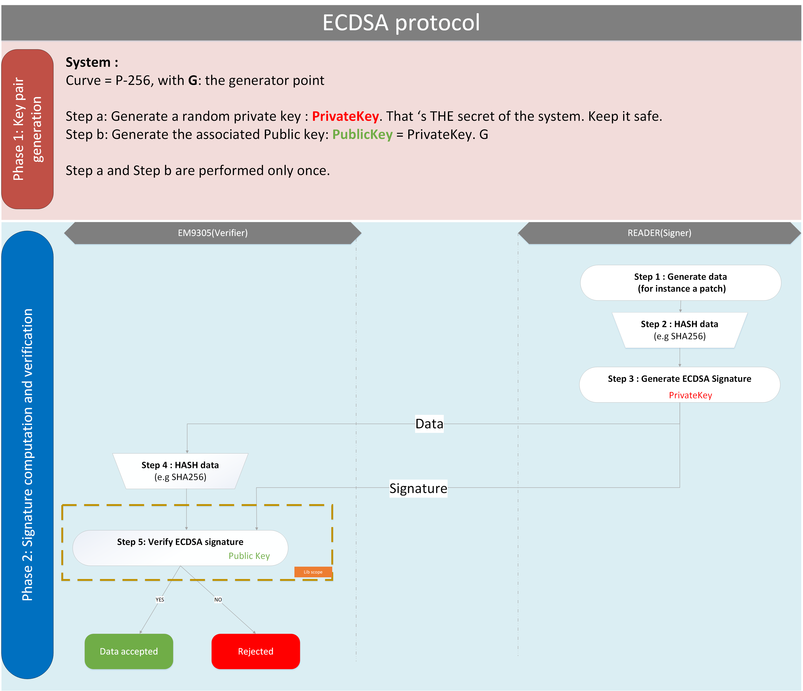

ECDSA
Bibliography
[1] FIPS 186-4: Digital Signature Standard
FIPS 186-4: https://csrc.nist.gov/publications/detail/fips/186/4/final
Goal of the document
The goal of this document is to describe the functionality of the library ECDSA.
- This document:
describes the supported functions,
describes the parameters, etc…
provides the performances of the functions.
ECDSA protocol
ECDSA protocol is a signature protocol based on elliptic curves.
In the context of EM9305, ECDSA is used to sign data and ensure the authenticity and the origin of the data.
External entity signs the data with the private key, while EM9305 verifies the signature with the public key.
If the signature is valid, the data is approved. If the signature is not valid, the data is rejected.
Next figure illustrates the protocol.

- ECDSA relies on:
an underlying curve: the underlying curve is P-256.
a hash algorithm: the API user can use any hash function (SHA-1, SHA-224, SHA-256, SHA-384, SHA-512 or any other). Nonetheless, it is recommended to use SHA-256 as the level of security is consistent with P-256 and a 32-byte long digest would not require truncation or padding.
For further details on P-256, see the chapter ECC P-256. For further details on the hash functions,:ref:SHA1_Label, SHA224, SHA256, SHA384, SHA512
The figure illustrates the 2 phases of the ECDSA signature process:
Phase 1: the key pairs generation (in brown in the figure)
A key pair of the system is generated: * Step a: a private key is generated. * Step b: the public key is generated from the private key.
The public key is provided to the signature verifier. In our example, the key is stored in EM9305.
The private key is provided to the signer.
Phase 2: The signature generation and the signature verification (in blue in the figure)
It is composed of several steps:
Step 1: the signer generates data.
Step 2: the signer hashes the previous data.
Step 3: the signer signs the hash of the data using the system private key. The signer sends the data and the signature to the verifier.
Step 4: the verifier hashes the recieved data.
Step 5: the verifier verifies the consistency of the signature and the hash.
APIs
The library only includes an API to verify the signature.
Note
The library does not embed any function to generate a signature.
Enumerations
The error status are given here: ECC Error Enumeration
ECDSA_Verify
Goal of the function
The function performs an ECDSA verification.
Note
The hash computation is not performed in this API. It only performs the operations on the P-256 curve.
Function
-
ECC_Error_t ECDSA_Verify(PointCertificate *Signature, POINT *PubKey, uint8_t *Message)
Performs an ECDSA verification.
- Parameters
Signature – [in] Signature of the message (a point)
PubKey – [in] Public key of the system (a point)
Message – [in] Message that was signed (32 -bytes)
- Return values
SW_ECDSA_SIGNATURE_VALID – Signature is valid
SW_ECDSA_INVALID_SIGNATURE – Signature is invalid
SW_ECC_INVALID_PUBLIC_POINT – Invalid public point
SW_ECC_SIGNATURE_COORDINATE_X_INVALID – Invalid coordinate X
SW_ECC_SIGNATURE_COORDINATE_Y_INVALID – Invalid coordinate Y
- Returns
Error status
Parameters
Signature : Signature of the message (a point)
PubKey : The public key of the system. A point that shall be on the curve P-256.
Message : The message that was signed. The message shall be 32-byte long. This is typically the result of the hash function.
Return values
Type |
Description |
OK \ NOK |
|---|---|---|
SW_ECDSA_SIGNATURE_VALID |
Verification operation is successful and the signature is valid |
OK |
SW_ECDSA_INVALID_SIGNATURE |
Verification operation was performed but the signature is not valid |
NOK |
SW_ECC_INVALID_PUBLIC_POINT |
The public key is not on the curve |
NOK |
SW_ECC_SIGNATURE_COORDINATE_X_INVALID |
The coordinate X of the given signature is not valid. Either it is null or greater than the modulus |
NOK |
SW_ECC_SIGNATURE_COORDINATE_Y_INVALID |
The coordinate Y of the given signature is not valid. Either it is null or greater than the modulus |
NOK |
General Performances
Library location
The lib is located in ROM.
Code size
Size in bytes |
|---|
5284 bytes in ROM for the complete ECC lib |
RAM
Size in bytes |
|---|
No global RAM |
Stack
Size in bytes |
|---|
Approximately 864 bytes |
Performances
Function |
Number of cycles |
Time in ms at 48Mhz |
|---|---|---|
ECDSA_Verify |
6378725 |
132 |
Dependencies
- The ECC lib depends on :
PRNG.lib for the random number generation
AES.lib which is used by PRNG.lib
For security reasons, some operations are performed with random numbers. It explains the dependency with the RNG.
Example
- Next C code example shows how to verify a signature and the returned status word when:
the signature is valid
the signature is not valid
/*------------------------------------------------
FILE : ExampleECDSAVerify.c
------------------------------------------------*/
#include <stdint.h>
#include "ECCTypedef.h"
#include "ECCStatus.h"
#include "ECDSA_Verify.h"
#include <ExampleECCUtilities.h>
//test structure
typedef struct {
char * Message;
char * Kpubx;
char * Kpuby;
char * SignX;
char * SignY;
} TEST_ECDSA_P256;
//First example: the signature is correct
TEST_ECDSA_P256 ExampleOK=
{
"44acf6b7e36c1342c2c5897204fe09504e1e2efb1a900377dbc4e7a6a133ec56",
"1ccbe91c075fc7f4f033bfa248db8fccd3565de94bbfb12f3c59ff46c271bf83",
"ce4014c68811f9a21a1fdb2c0e6113e06db7ca93b7404e78dc7ccd5ca89a4ca9",
"f3ac8061b514795b8843e3d6629527ed2afd6b1f6a555a7acabb5e6f79c8c2ac",
"8bf77819ca05a6b2786c76262bf7371cef97b218e96f175a3ccdda2acc058903"
};
//Second example: the signature is NOT consistent with the message
TEST_ECDSA_P256 ExampleNOK=
{
"01acf6b7e36c1342c2c5897204fe09504e1e2efb1a900377dbc4e7a6a133ec56",
"1ccbe91c075fc7f4f033bfa248db8fccd3565de94bbfb12f3c59ff46c271bf83",
"ce4014c68811f9a21a1fdb2c0e6113e06db7ca93b7404e78dc7ccd5ca89a4ca9",
"f3ac8061b514795b8843e3d6629527ed2afd6b1f6a555a7acabb5e6f79c8c2ac",
"8bf77819ca05a6b2786c76262bf7371cef97b218e96f175a3ccdda2acc058903"
};
uint8_t Example_ECDSAVerify(void)
{
uint8_t Message[CURVE_SIZE_P256*4]; //Message is 32 bytes for P256
PointCertificate Signature;
POINT_P256 Kpub;
ECC_Error_t Status;
uint8_t Error=0;
//EXAMPLE 1: Signature is correct
//------------------------------
//convert the data in a byte array
ConvertStringToU8(ExampleOK.Message,Message,CURVE_SIZE_P256*4);
//Create the public key in a point
ConvertStringToU32(ExampleOK.Kpubx, &Kpub.x[0],CURVE_SIZE_P256);
ConvertStringToU32(ExampleOK.Kpuby, &Kpub.y[0],CURVE_SIZE_P256);
//Create the signature
ConvertStringToU32(ExampleOK.SignX, &Signature.x[0],CURVE_SIZE_P256);
ConvertStringToU32(ExampleOK.SignY, &Signature.y[0],CURVE_SIZE_P256);
//Go for verification
Status= ECDSA_Verify((PointCertificate*)&Signature,(POINT*)&Kpub,(uint8_t*)Message);
//We expect a SW OK since the signature is correct
if(Status!=SW_ECDSA_SIGNATURE_VALID)
Error++;
//EXAMPLE 2: Signature is NOT correct
//------------------------------
//convert the data in a byte array
ConvertStringToU8(ExampleNOK.Message,Message,CURVE_SIZE_P256*4);
//Create the public key in a point
ConvertStringToU32(ExampleNOK.Kpubx, &Kpub.x[0],CURVE_SIZE_P256);
ConvertStringToU32(ExampleNOK.Kpuby, &Kpub.y[0],CURVE_SIZE_P256);
//Create the signature
ConvertStringToU32(ExampleNOK.SignX, &Signature.x[0],CURVE_SIZE_P256);
ConvertStringToU32(ExampleNOK.SignY, &Signature.y[0],CURVE_SIZE_P256);
//Go for verification
Status= ECDSA_Verify((PointCertificate*)&Signature,(POINT*)&Kpub,(uint8_t*)Message);
//We expect a SW NOK since the signature is NOT correct
if(Status!=SW_ECDSA_INVALID_SIGNATURE)
Error++;
return(Error);
}